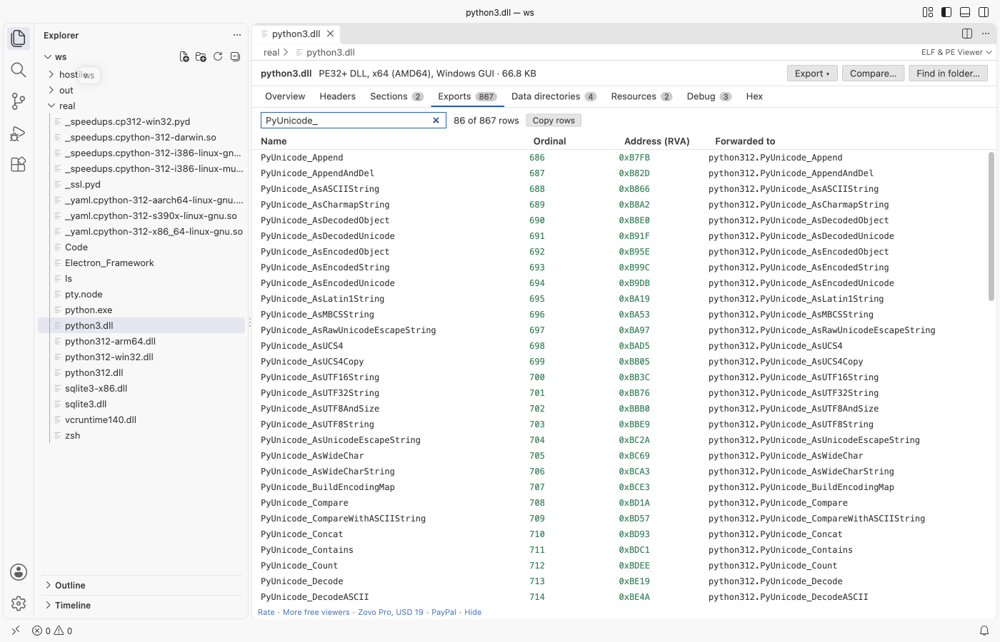

Open files in VS Code and Cursor / Binary, network and hardware
See which functions a Windows DLL exports
The export table of a DLL lists the functions other programs can call, by name and by ordinal, and some exports only forward to another DLL. ELF Viewer & PE Viewer opens the .dll in VS Code and shows every export with its name, ordinal, address and forwarder on an Exports tab you can filter, sort and copy. It needs no Visual Studio and no dumpbin. Zovo Pro (USD 19 once) adds a search that finds which binary in a folder exports or imports a name, with 3 free tries.
Free, MIT license. Extension ID zovo.zovo-elf-pe-viewer, version 0.1.5. Needs VS Code 1.90.0 or newer.

Steps in VS Code
- Install ELF Viewer & PE Viewer from the Marketplace, or press Ctrl+P (Cmd+P on macOS) and run
ext install zovo.zovo-elf-pe-viewer. - Click the
.dllfile in the Explorer. It opens in the viewer. The Overview shows the export name and the number of exports. - Open the Exports tab. Each row has the name, the ordinal, the address (RVA) and, for a forwarded export, the target such as
python312.PyUnicode_Append. An export with no name shows as#and its ordinal. - Type part of a name in the filter box to narrow the list, and click a column header to sort.
- Click Copy rows to put the rows you see on the clipboard as tab-separated text.
- Open the Imports tab to see what the DLL calls in other DLLs, by name and by ordinal, with delay-load imports marked.
Where Zovo Pro saves time
Headers, sections, imports, exports, symbols, resources, the hex view, filter, sort and copy are free, with no limit and no sign-in. Tables with 100,000 rows scroll smoothly. The DLL is never changed, and the extension makes no network calls.
When you know a function name but not which DLL in a build folder exports it, opening each file takes too long. Find a symbol or import in a folder reads every ELF, PE and Mach-O file in the folder and lists each import, export, library or symbol that matches, with its file. Plain text matches any part of a name, and /regex/ works too. The other Pro tools compare two builds and export the structure as JSON or a C header.
With Find a symbol or import in a folder (Zovo Pro)
- Click Find in folder... at the top of the viewer, or run "ELF & PE Viewer: Find a symbol or import in a folder (Pro)" from the Command Palette.
- Type a name such as
CreateFileW, or a/regex/. The search covers your workspace folder, or the folder of the open file when it is outside the workspace. - Pick a match to open its file. A search with no match uses no try.
Find a symbol or import in a folder works 3 times on your computer before it asks for a license, and a try counts only when you get a result. Opening a file shows no popup and no countdown.
Zovo Pro costs USD 19 once. It is not a subscription, and it turns on the Pro tools in every Zovo extension, not only ELF Viewer & PE Viewer. After a card payment (Stripe) your license key shows on the next page. In VS Code, run "Zovo Pro: Enter Zovo Pro license key" from the Command Palette and paste it. The key is checked on your computer, with no network call. With GitHub Sponsors, pick the "$19 one time" tier, then run "Zovo Pro: I already paid: unlock with GitHub Sponsors" and sign in with the same GitHub account. With PayPal, send USD 19 with "Zovo Pro" in the note and the key comes by email within a day.
A team of 5: USD 59 once, by card or by PayPal. Every rule and every Pro tool is on the Zovo Pro page.
Steps in Cursor, Windsurf or VSCodium
- Open the Extensions view with Ctrl+Shift+X (Cmd+Shift+X on macOS).
- Search for
zovo.zovo-elf-pe-viewerand click Install. Cursor, Windsurf and VSCodium install from Open VSX, where it is published aszovo/zovo-elf-pe-viewer. - If your editor has no gallery, download the .vsix from the Open VSX page and run "Extensions: Install from VSIX...".
- Then use it the same way as in VS Code.
What ELF Viewer & PE Viewer handles
- Exports by name and by ordinal only, with forwarders to other DLLs.
- Imports by name and by ordinal, and delay-load imports.
.dll,.exe,.sys,.pyd,.ocxand.efifiles, 32-bit and 64-bit.- The exports of Linux
.sofiles and macOS dylibs on the same tab.
What it does not do
- Names are shown as stored in the file. C++ names stay decorated and are not demangled.
- Each table stops at 100,000 rows, and the viewer says so.
- No disassembly, so you see where an export points but not its code.
Other options
- dumpbin. Comes with Visual Studio.
dumpbin /exports foo.dllprints the ordinal, hint, RVA and name of each export. - Dependencies. A free Windows program that shows the imports and exports of a DLL and the DLLs it loads.
- objdump. From GNU binutils or MinGW.
objdump -p foo.dllprints the export table among the other headers.
Install counts and Open VSX status were checked on 13 November 2026. Descriptions in quotes are the extensions' own.
Questions
What is a forwarded export?
An export that has no code in this DLL and points to a function in another DLL. The Forwarded to column names the target, such as python312.PyUnicode_Append.
What is an export with only an ordinal?
A function that is exported by number and has no name. Callers must use the ordinal. It shows as # and the number.
Does it work for a .so file on Linux?
Yes. The same Exports tab lists the exported symbols of an ELF shared object.
Does it work in Cursor or Windsurf?
Yes. Cursor, Windsurf and VSCodium install extensions from Open VSX. Search for the extension in their Extensions view and install it there.
More about ELF Viewer & PE Viewer
Read the ELF Viewer & PE Viewer page for every feature and setting, or the source code on GitHub.
Related guides
- ELF Viewer & PE Viewer on the VS Code Marketplace (also on Open VSX). Shows headers, sections and imports of ELF, PE and Mach-O files.
- See the sections and imports of an ELF, EXE or DLL file in VS Code
- Check if a .dylib or Mac binary is universal
- Check if an .exe or .dll has ASLR and DEP enabled
- Use a hex editor in VS Code
Zovo Pro and support
Zovo Pro: USD 19 once, every Zovo viewer. It turns on the Pro tools in this extension and in the other Zovo extensions you use. The free features stay free.
After a card payment your license key shows on the next page. Paste it with the command "Zovo Pro: Enter a key".
You can also support the work with no Pro:
Need your format supported?
Open a format request with a sample file, and I reply there whether it can be done. For USD 299 once, through this GitHub Sponsors tier, I add your file format or a missing feature to this extension, with tests, within 7 days.